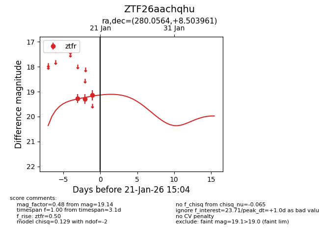
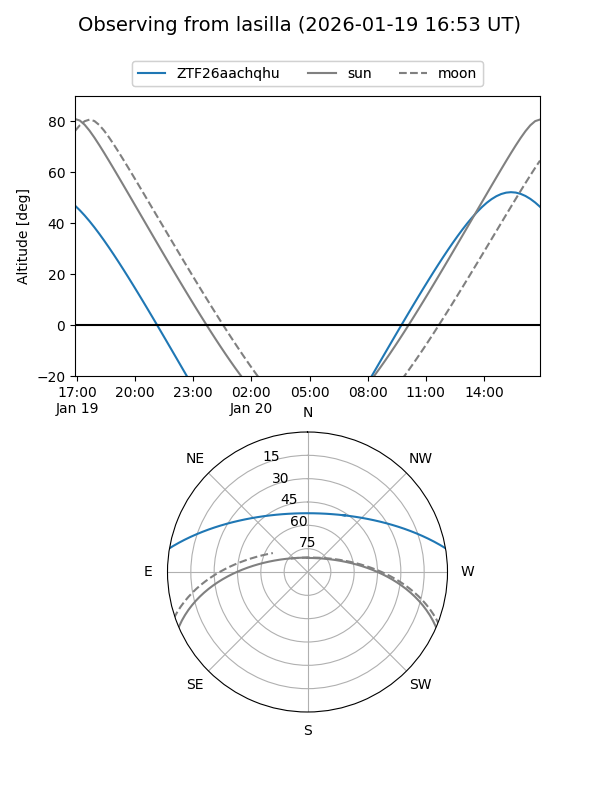
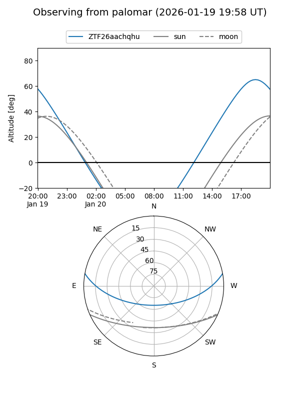

ZTF26aachqhu
Target ZTF26aachqhu at 2026-01-21 15:06
Aliases and brokers:
FINK: link
Lasair: link
ALeRCE: link
alt names
ZTF26aachqhu (ztf,fink_ztf)
Coordinates:
equatorial (ra, dec) = 280.0564,+8.50396
equatorial (HMS+DMS) = 18:40:13.52,+08:30:14.26
galactic (l, b) = (39.2605,+6.34273)
Flags:
Photometry:
last ztfr=19.14
3 ztfr detections
Lightcurve

Visibility


Additional plots